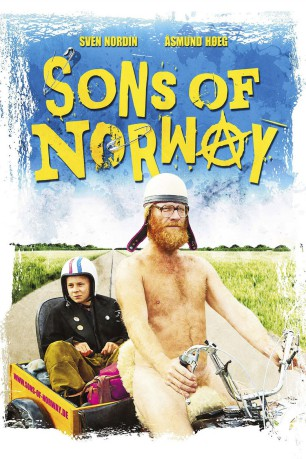

#5844 Sons of Norway
 
 IMDB-Wertung: 6.5 / 10
IMDB-Wertung: 6.5 / 10  Metascore: 0
Metascore: 0 
Rebellieren wird einem nicht leichter gemacht, wenn der eigene Vater ein noch viel größerer Rebell ist. Im Oslo der 1970er-Jahre hört Nikolaj zum ersten Mal die Sex Pistols – eine Band, die sein Leben verändert. Nichts wird wieder so sein wie vorher für Nikolaj. Doch gegen das Establishment und die Autoritäten zu sein, ist nicht einfach, wenn der Vater ein Alt-Hippie ist, der bevorzugt mit seinem Sohn zum Urlaub ins Nudisten-Camp fährt und auch vor dem Schuldirektor keinen Respekt hat.
Jahr: 2011
Dauer: 87 Minuten
FSK: 12
Land: Norwegen Studio: Alamode FilmTonspuren:
Untertitel: Deutsch,
Auflösung: 1080p (1920x808) Größe: 4372 MB
Genre: Drama
Regisseur: Jens Lien
Drehbuch: Jeff Buhler
Soundtrack:
Darsteller:
- Åsmund Høeg als Nikolaj
 Sonja Richter als Lone
Sonja Richter als Lone- John Lydon als Johnny Rotten
- Ivar Lykke als Politimann
- Trond Nilssen als Anton
 Telly Savalas als Theo Kojak , archive footage, uncredited
Telly Savalas als Theo Kojak , archive footage, uncredited- Sven Nordin als Magnus
- Camilla Friisk als Nina
- Tony Veitsle Skarpsno als Tor
- Eliza Sica als Punk Girl , uncredited
Datei: X:\2011(N-Z)\Sons of Norway (2011, FSK12, 1920x808).mkv seit 28.03.2017
Festplatte: HD 2011(G-Z)
 Es gibt insgesamt 132 Filme in der Gruppe '2011(N-Z)'
Es gibt insgesamt 132 Filme in der Gruppe '2011(N-Z)'